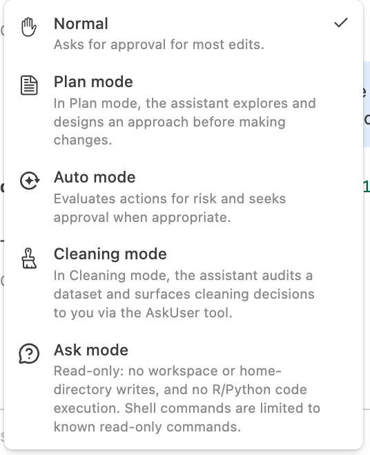
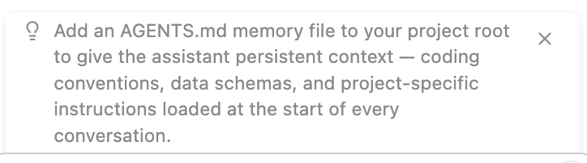

An Introduction to Posit Assistant
Professor of the Practice, Statistical Science - Duke University
Senior Developer Advocate, Posit PBC
2026-09-24
Special thanks to François Michonneau (Solutions Engineer, Posit PBC) and Garrett Grolemund (Director of Learning, Posit PBC) for the original materials this webinar is based on.
A data analysis assistant that connects to your live R and Python sessions, sees your data, and helps you explore, visualize, build, and debug.
Posit Assistant needs a model provider to power its responses.
Posit AI Pass is the easiest way to get started — a managed service from Posit where you sign in once with no API keys to manage.
Posit Assistant also supports many other providers including Anthropic, OpenAI, Google Gemini, and local models like Ollama.
Posit Assistant connects to your live R and Python sessions and sees:
Generated code works with your actual environment, not a generic example.
Posit Assistant runs across multiple environments:
| Platform | Notes |
|---|---|
| Positron | Pre-installed in recent versions |
| RStudio | Latest release; includes Next-Edit Suggestions |
| Terminal | pa TUI for interactive or headless use |
While Posit Assistant works in RStudio and the terminal too, this webinar introduces it through Positron — a free, open-source IDE purpose-built for data science.
A free fork of Visual Studio Code purpose-built for data science

Tip
Get it at positron.posit.co
Positron gives data scientists a unified environment to:
🖥️ Live Demo
Quickly set up directories and virtual environments with New Folder from Template
Clone a repository directly into Positron:
New → New Folder from Git
🖥️ Demo:
Clone a repo (github.com/mine-cetinkaya-rundel/think-first-pa-webinar-asa) and inspecting data.
Searchable list of all commands in Positron – Type any command name to filter and run it instantly — no need to navigate menus.
Keyboard shortcut: Cmd/Ctrl + Shift + P
🖥️ Demo:
Cmd/Ctrl + Shift + PPosit Assistant is Positron’s default AI experience (replacing Positron Assistant and Databot – see history of Posit data science agents.
🖥️ Demo:
Open and configure Posit Assistant, then ask
Load the data in
credit_raw.csv. What is the lowest age in the data set? The highest?
Code is the most auditable way to explore data with AI.
Posit Assistant has specialized modes that adapt its behavior.

The default mode for everyday work:
No special restrictions — the assistant reads and writes freely, executing code and making changes as needed.
The assistant takes the wheel autonomously, deciding what tools to use and when.
Useful for multi-step tasks where you want it to explore, iterate, and apply changes with minimal back-and-forth — without needing to approve each action.
Collaborate on a design before any code changes are made.
Enter with /plan. The assistant will:
Once you approve, it begins implementing immediately.
Purpose-built for data auditing and tidying: checks column names, types, distinct values, outliers, and potential data-entry errors — surfacing every substantive cleaning decision for approval before acting.
A read-only mode for exploring and understanding without any side effects.
Enter with /ask. The assistant can read files, search code, and inspect your R/Python session — but cannot modify files, execute code, or use MCP tools.
Exit with /normal.
🖥️ Demo:
Open Posit Assistant, choose Cleaning mode, and ask it:
Clean the data in
credit_raw.csv. Save the clean version of the data ascredit.csv.
For each prompt, explain:
| Element | Purpose | Example |
|---|---|---|
| Why | Your ultimate goal | “I want to understand loan risk…” |
| What | Clear instructions | “Fit a logistic regression…” |
| How | Tools to use | “…using the tidymodels package” |
Good prompts → “better”, more targeted code.
🖥️ Demo:
Clear the variables. Then ask Posit Assistant:
I’m trying to understand the factors associated with loan delinquencies. Please load
credit.csv. Then fit a simple logistic regression to the data that usesserious_dlqin_2yrsas a response variable. Use thestats(R) /statsmodels(Python) package.
Follow up until you understand what the model says.
Posit Assistant can remember context across sessions via AGENTS.md files:
~/.posit/assistant/AGENTS.md) — personal preferencesAGENTS.md in repo root) — project facts, data schemas, conventionsTip
Full docs: assistant.posit.co/docs/features/memory
Skills are specialized modules of instructions that Posit Assistant loads automatically when relevant — or you can invoke them directly with /skill-name.
| Skill | Description |
|---|---|
create-skill |
Create new Agent Skills following the specification |
import-instructions |
Migrate Positron, Copilot, Claude Code, and VS Code instruction files into Posit Assistant skills |
posit-products |
Use Positron IDE and Posit Workbench; deploy to Posit Connect and Posit Connect Cloud |
predictive-modeling-python |
Modeling and machine learning with scikit-learn in Python |
predictive-modeling-r |
Modeling and machine learning with tidymodels in R |
quarto-authoring |
Write and author Quarto documents (.qmd) |
report |
Create Quarto documents or notebooks from conversations |
r-package-development |
R package development with devtools, testthat, and roxygen2 |
shiny-bslib |
Build modern Shiny dashboards and apps with bslib |
shiny-bslib-theming |
Advanced theming for Shiny apps using bslib and Bootstrap 5 |
snowflake |
Connect to Snowflake and query data via semantic views |
You can add your own skills at two levels:
~/.posit/assistant/skills/{skill-name}/ — available across all projects.posit/assistant/skills/{skill-name}/ in your project root — scoped to one projectEach skill is a folder with a SKILL.md file:
Tip
🖥️ Demo:
Begin exploring the model with visuals or tables. Pick one prompt and iterate:
gt (R) or great_tables (Python) to make a table listing the odds ratio for each predictor.ggplot2 (R) or plotnine (Python) to make a calibration plot for the model.Posit Assistant responds to / commands for common tasks:
| Command | What it does |
|---|---|
/report |
Generate a Quarto document (.qmd) |
/notebook |
Generate a Jupyter notebook (.ipynb) |
/plan |
Design an approach before writing code |
/compact |
Summarize the conversation to reduce token usage |
Both output commands capture your code in a fully editable, reproducible format.
🖥️ Demo:
Run /report or /notebook in Posit Assistant to save your code. Then:
Posit Assistant is excellent at translating between R and Python.
🖥️ Demo:
I’d like to experiment with this model fit. Turn
test.R(ortest.py) into a Shiny app that lets the user adjust parameters for creating the simulated dataset and then shows the results of fitting the model to the data. Include an action button so the model does not update until the user is finished describing the data.
:::
As you work, Posit Assistant proactively surfaces tips and suggestions — things like improving your workflow, setting up memory, or using a relevant feature you might not know about.

The easiest way to get started — a managed LLM service from Posit:
Questions?
🔗 Posit Assistant: assistant.posit.co
in Positron · in RStudio · in Terminal
🔗 Slides: bit.ly/think-first-pa